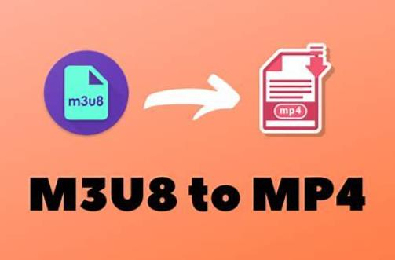

M3U8 是一种基于文本的播放列表文件格式，在视频流媒体技术中被广泛使用。它基于 M3U 文件格式，但是支持更多的功能，常用于存储多种清晰度和编码的视频文件，以供在线视频播放器进行动态切换和适配。

M3U8 文件是一种索引文件，内部包含了视频流各种清晰度和分段的地址信息。通过解析 M3U8 文件，视频播放器可以根据网络状况和设备性能自动选择最适合的清晰度和编码方式进行播放，从而实现更流畅的视频观看体验。M3U8 文件通常使用 HTTP 或 HTTPS 协议进行传输，因此可以方便地在 Web 端、移动端和各种设备上进行播放。该文件格式在实时直播、点播访问等场景中得到广泛应用，例如在线直播、视频点播网站等，提供了一种灵活而高效的视频流传输方式。